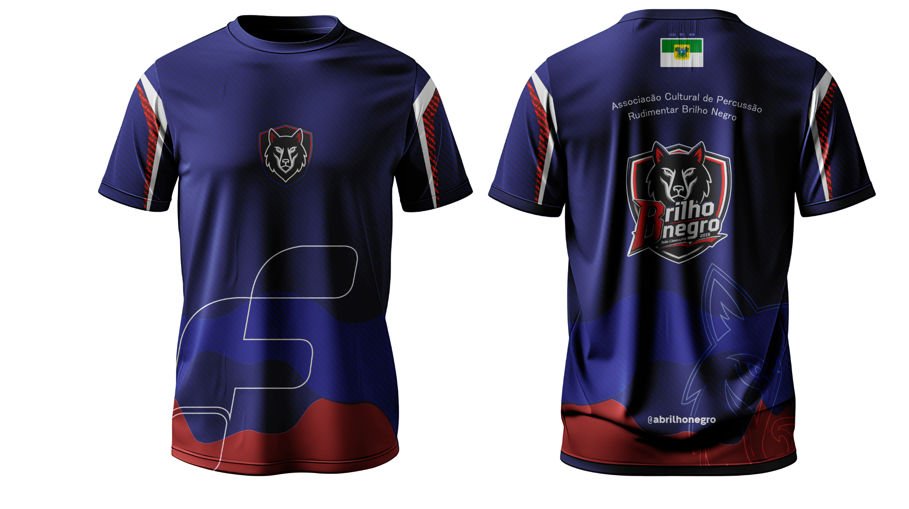

BRILHO NEGRO · JOÃO CÂMARA/RN · 2026
Você está vendo
uma camiseta.
Mas quantas decisões existem aqui?
Uma leitura visual da peça — da silhueta à estampa — para descobrir como um designer transforma forma, cor e identidade em produto.
Olhe de novo ↓
ANÁLISE VISUAL
01 — 11
01 — 11
A pergunta central
Por que essa camiseta funciona?
Não existe uma única resposta. A força da peça nasce da soma: base escura, acentos quentes, grafismos, identidade de grupo e uma construção visual que usa o corpo da camiseta como parte da composição.
02 — OLHE DE NOVO
A peça tem
pontos de decisão.
Passe o cursor ou toque nos marcadores. Cada um conecta um detalhe visível a um princípio de design.
03 — A SILHUETA
O corpo também
é linguagem.
A imagem sugere uma camiseta de corte esportivo/contemporâneo, com corpo relativamente reto, manga curta e gola arredondada. O comprimento e o caimento exatos são hipóteses baseadas na fotografia, porque um mockup não permite medir a peça real.
01Ombro → define a primeira leitura da largura.
02Manga → prolonga a dinâmica das faixas laterais.
03Corpo → oferece área para a arte respirar.
04Barra → cria uma base cromática de fechamento.
LARGURA VISUALÁREA DE ARTEFECHAMENTO
04 — EXPERIÊNCIA CENTRAL
Desmonte
a peça.
Não estamos desmontando uma camiseta fisicamente. Estamos desmontando as decisões que fazem a imagem funcionar.
CAMISA
01 / 06
A peça inteira
Começamos pelo conjunto. Antes de avaliar detalhes, perceba a hierarquia geral: azul escuro domina; vermelho e branco criam ritmo; os símbolos carregam identidade.
Agora você não está mais vendo uma camiseta.
Está vendo decisões.
Está vendo decisões.
05 — A ESTAMPA
O lugar muda
a leitura.
A arte frontal da referência é compacta e alta no peito. Compare posições para entender como escala e localização alteram a composição.
BN
Na referência, a assinatura frontal é pequena em relação ao corpo. Isso preserva espaço negativo e evita que a marca engula a silhueta.
06 — TIPOGRAFIA
Brilho
Negro
Negro
Identidade não é
só o símbolo.
No verso, o nome da associação aparece em uma tipografia leve e arqueada, enquanto o logotipo central tem peso, contorno e presença muito maiores. Essa diferença cria níveis de leitura.
01 / PESOtexto informativo → logo dominante02 / ESCALAo logotipo recebe a maior massa visual03 / CONTRASTEbranco e vermelho destacam a informação
07 — COR
Uma paleta com
temperatura.
O azul muito escuro forma o campo principal. Vermelho aparece como acento energético; branco funciona como estrutura e contraste. O resultado é uma paleta de temperatura fria com pontos quentes.
AZUL
#101653VERMELHO
#B51D1DBRANCO
#F2F1EA
#101653VERMELHO
#B51D1DBRANCO
#F2F1EA
Referência: azul profundo. A cor cria um campo visual estável para os acentos vermelhos.
08 — TECIDO
O que a imagem
permite dizer?
O mockup mostra textura fina e um caimento com brilho controlado. Isso sugere uma leitura esportiva/funcional, mas não é possível confirmar composição, gramatura ou fibra apenas pela imagem.
OBSERVADO
textura visual · brilho · queda da peça
HIPÓTESEacabamento de performance / tecido leve
NÃO DETERMINÁVELfibra · gramatura · construção interna
09 — APLICAÇÕES
Do mockup para
o mundo real.
A própria referência já apresenta frente e costas. Em um projeto profissional, essas duas vistas resolvem a principal necessidade de apresentação: mostrar a peça completa sem inventar um contexto que não existe.
APRESENTAÇÃO COMERCIAL
Uma ficha visual forte precisa deixar o produto falar primeiro: vista, detalhe, identidade e informação.
10 — DESAFIO
Você consegue
identificar o problema?
Se a estampa frontal ocupasse quase todo o torso, o que provavelmente aconteceria?
11 — CONCLUSÃO
MODELAGEM+PROPORÇÃO+COR+TIPOGRAFIA+MATERIAL+COMPOSIÇÃO+APRESENTAÇÃO= PRODUTO